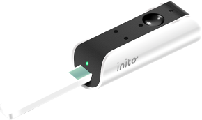

Track your fertility hormones at home, in 10 minutes
Get accurate results of Estrogen, LH, Progesterone (PdG) and FSH with Inito, the all-in-one, FDA-registered fertility monitor.
AS SEEN ON
The only fertility kit you will ever need
Most ovulation tests predict your fertile days by tracking Estrogen and Luteinizing Hormone (LH), but fail to measure the hormone that actually confirms your ovulation and supports pregnancy: Progesterone .
What makes Inito different?
Inito is the only fertility monitor that measures all 4 hormones on a single test strip, showing you a full picture of your cycles with results unique to your body.
TRUSTED BY 20,000+ COUPLES
FREE US SHIPPING
HSA/FSA ELIGIBLE
Predict and confirm your ovulation with actual data
Unlike most ovulation tests that only give you "yes/no" results, Inito provides real numerical values of your fertility hormones.
If you have irregular cycles, actual data is necessary to know exactly when you ovulate, and when is the best time to try to conceive.
Never miss a day again with Inito
Inito tracks up to 6 fertile days and confirms ovulation by measuring all 4 hormones in just 10 minutes:
Estrogen, which rises 3-4 days before ovulation
LH, which surges 24-36 hours before ovulation
Progesterone (PdG), which rises after ovulation
FSH, to track follicle growth
Why Inito is the smarter way to get pregnant
Anovulation (having a menstrual cycle with no egg) is actually a common occurrence, affecting 1 in 10 women*.
A sure way to confirm ovulation is a rise in Progesterone level after peak fertility. Progesterone also supports implantation and elevated levels of PdG during the 7-10 day window after ovulation correlates to higher chances of a successful pregnancy.
* Source: National Institutes of Health
Adapts to your irregular cycle
Most ovulation kits have a set value or a threshold, making them likely to give a false read if your hormones fall outside the average range.
Every woman is unique, especially with a condition like PCOS or Thyroid which can influence hormone levels. Inito measures real values of your hormones to personalize results to the unique you.
Inito tracks everything so you don’t have to
The Inito Fertility Monitor comes with a free easy-to-use App, so you can track your fertile days with ease and know exactly when you ovulate.
Our App notifies you for everything:
- Your fertile days
- When to test on the right days
- When you’ve successfully ovulated
- And when to roll into bed!
Get charts and actual values of your hormones
Actual numerical values are necessary to know whether your PdG levels are sufficient enough to support a healthy pregnancy.
Studies show that Pdg levels lower than 7.9ng/ml in serum (around 10ug/ml PdG) 6-8 days after ovulation are associated with lower pregnancy outcomes.
A fertility lab at your fingertips
Easy-to-read fertility diagnostic results directly on your iPhone¹, in just 10 minutes.
Dip the test strip in urine for 15 seconds.
Attach the Inito Fertility Monitor to your iPhone*.
* The Inito Fertility Monitor currently supports iPhone 7 and up. Android phones are not supported at the moment.
Insert the test strip into the Inito Fertility Monitor.
Get personalized results on our App in 10 minutes.
This is my favorite fertility monitor I’ve tried so far. I was cautious about ordering since there’s very little info or reviews around the internet, but it seems to be a very well made and reliable device. It’s totally fascinating to see my hormone levels on the chart! My LH levels don’t cooperate with standard ovulation strips (I never get a positive with standard strips), so it’s nice to see all the different hormones mapped out together.
This device is fantastic! It’s so easy to use and the results are very clear. I feel much more in control of my fertility.
Great product but it took a while to get used to the interface. Once I did, it worked perfectly.
Your top questions, answered
Inito gives results as: High Fertility, Peak Fertility or Ovulation Confirmed. Inito also shows you the charts and actual values of all 3 hormones.
Typically, a cycle requires around 10-15 test strips depending on individual variability.
Refill strips can be purchased directly from the Inito website. You do not need to buy a new monitor every cycle, just the test strips.